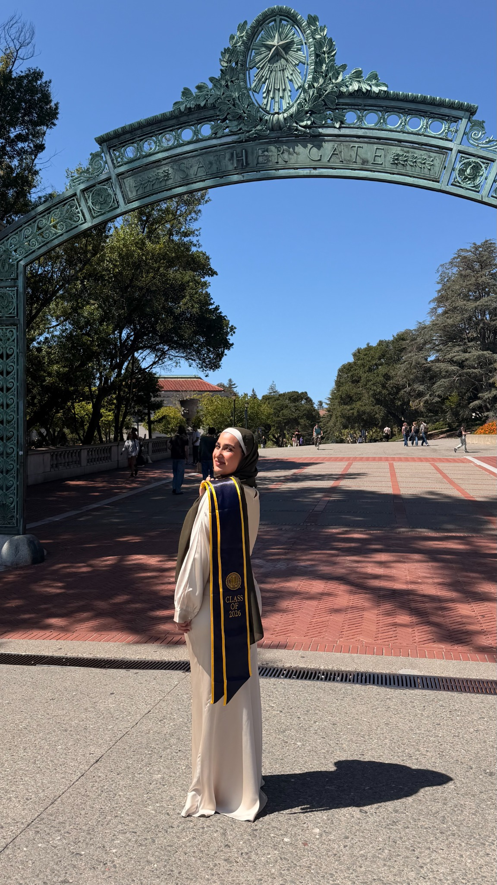
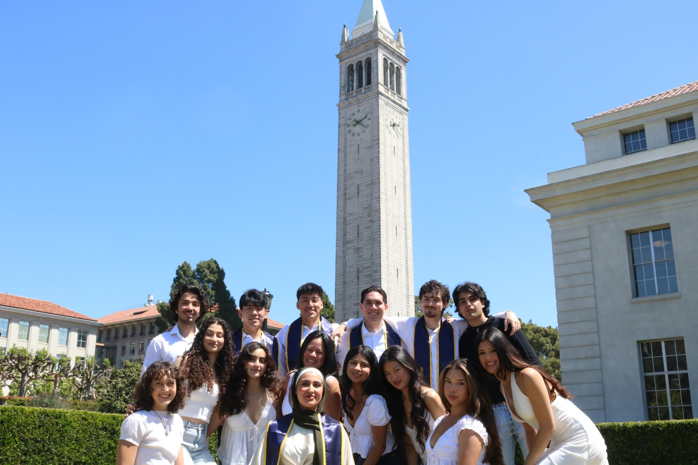
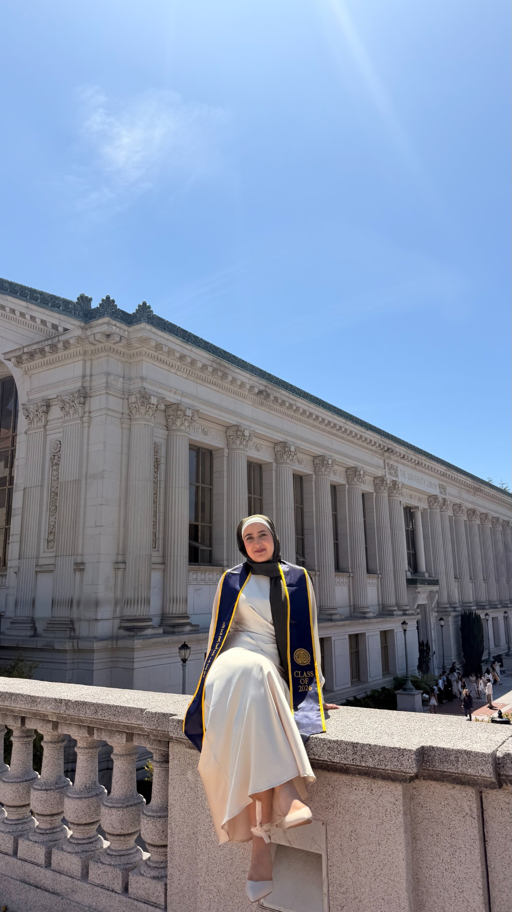
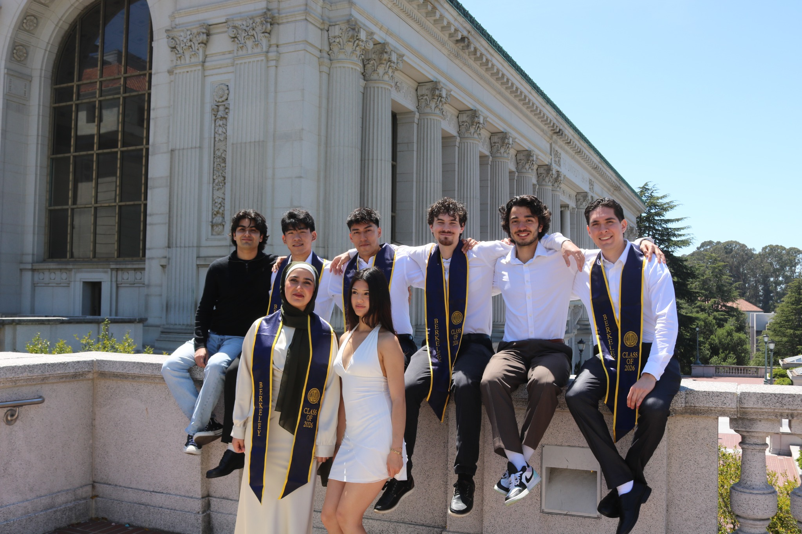

Beyond the resume
Built at Berkeley, strengthened by community.
My Berkeley experience was more than coursework. It taught me to keep learning through hard problems, build alongside people with different perspectives, and bring persistence and curiosity into every technical team I join.



